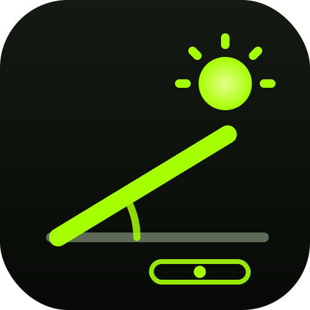

Roof Clinometer โซล่า
วัดมุมหลังคา · ลูกน้ำ · มุมแผงโซล่าเซลล์สแกนเพื่อเปิดบนมือถือ
preedaratnarong.github.io/roof-clinometer
🤖 Android (Chrome)
- เปิดลิงก์ด้วย Chrome
- กดปุ่ม 📲 ติดตั้งแอป ในแอป หรือเมนู ⋮ → ติดตั้งแอป / เพิ่มไปยังหน้าจอหลัก
- กด ติดตั้ง — ไอคอน RoofAngle จะขึ้นที่หน้าจอ
🍎 iPhone / iPad (Safari)
- เปิดลิงก์ด้วย Safari
- กดปุ่ม แชร์ ⬆️ ด้านล่าง
- เลือก เพิ่มไปยังหน้าจอโฮม แล้วกด เพิ่ม
- เปิดแอปจากไอคอน แล้วกด “เริ่มวัด” → อนุญาตเซนเซอร์
ติดตั้งแล้วใช้งานออฟไลน์ได้ · เข็มทิศให้วัดห่างแปเหล็ก/เมทัลชีท ~1 เมตร